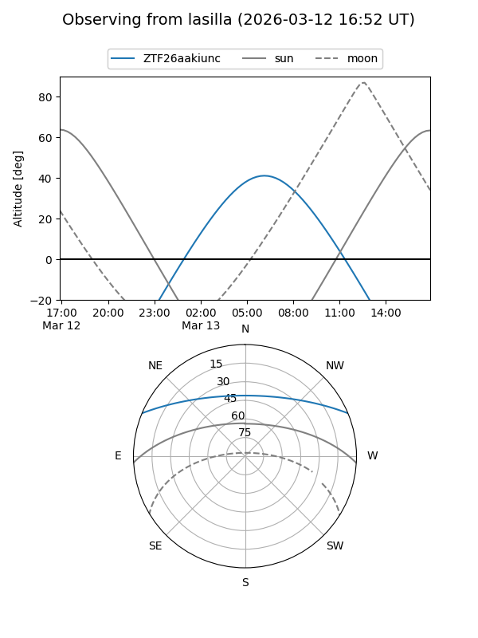
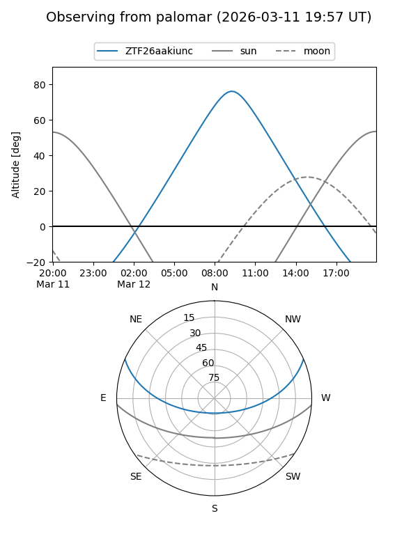

ZTF26aakiunc
Target ZTF26aakiunc at 2026-03-12 09:30
Aliases and brokers:
FINK: link
Lasair: link
ALeRCE: link
alt names
ZTF26aakiunc (ztf,fink_ztf)
Coordinates:
equatorial (ra, dec) = 191.7699,+19.73566
equatorial (HMS+DMS) = 12:47:04.77,+19:44:08.39
galactic (l, b) = (295.0076,+82.54026)
Flags:
Photometry:
last ztfg=19.66
1 ztfg detections
Lightcurve
Visibility


Additional plots